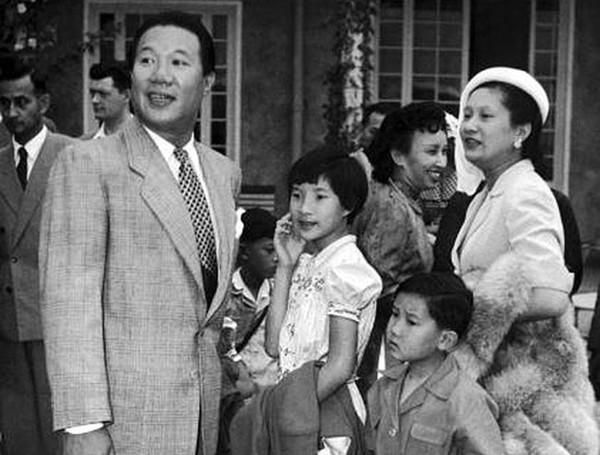

Nhưng rồi bà chẳng phải nghĩ ngợi, hồ nghi lâu. Những tin đồn về những cô gái Hà Nội và cả những mệnh phụ đã không thư từ mà vẫn tới Huế. Chỉ mấy tháng sau khi ra Hà Nội, ông Vĩnh Thụy đã gặp lại Lý Lệ Hà, người tình cũ của ông. Ông quan hệ công khai với thị, đêm đêm hai người rủ nhau đi dạo, ăn nhậu, lui tới các tiệm nhảy, các hộp đêm, các nơi ăn chơi, bất chấp dị nghị của mọi người xung quanh đang sống khắc khổ đạm bạc.
Cuộc sống của người dân và kể cả các nhà lãnh đạo sau khi cách mạng mới thành công vẫn còn chồng chất khó khăn. Không những là nạn đói chưa khắc phục xong, chính quyền mới thành lập phải đương đầu với việc củng cố hệ thống đê bởi nhiều đoạn không chống nổi mức nước dâng cao trong mùa lũ tháng 8, việc tiếp tế gạo từ miền Nam gặp nhiều trở ngại do thiếu phương tiện vận chuyển, nhiều cầu cống bị bom Mỹ phá hủy chưa khôi phục xong. Thêm vào đó, hàng vạn quân Nhật chưa hồi hương hết thì gần hai mươi vạn quân Tưởng đã tràn vào. Tiếng súng chống xâm lăng đã nổ ở miền Nam.

.Trong khi bà Nam Phương ý thức rất rõ những gì mình phải làm để góp phần vào việc xây dựng đất nước mới được ra đời với bao khó khăn chồng chất, để giảm nhẹ gánh nặng cho Cụ Hồ, cho Chính phủ thì ông Vĩnh Thụy lại thấy công việc của ông làm, sự có mặt của ông tại Hà Nội chỉ như là củng cố thêm cho Chính phủ chứ thực ra chẳng quan trọng gì. Trong lời phát biểu ngày mồng 7 tháng 9 năm 1945, trả lời các nhà báo đến phỏng vấn ông tại nhà riêng số 51 phố Trần Hưng Đạo, ông nói: Tôi đã thoái vị, Chính phủ lại mời làm cố vấn. Tôi vui lòng ra đây để yên lòng Chính phủ...
Thực ra chỉ vài tuần sau ngày thoái vị, cả ông và bà đều không còn lo nhân dân và chính quyền trả thù nữa. Nhưng cuộc sống đời thường ở thủ đô Hà Nội đã khiến ông như tỉnh lại sau một cơn mê dài. Là người được sống sung sướng từ nhỏ, ông chưa bao giờ phải chịu vất vả thiếu thốn. Đời ông kể từ lúc lên ngai vàng rồi có vợ hiền con ngoan, ông chưa bao giờ phải từ bỏ những sở thích của mình. Ông vẫn biết Cụ Hồ rất quan tâm đến cuộc sống của ông những ngày ở Hà Nội, không để ông phải chịu những cảnh sống vất vả như những người khác. Không những quan tâm đến ông, mà Cụ Hồ còn quan tâm đến cả cuộc sống của mẹ con bà Nam Phương vẫn còn ở Huế. Dịp Tết Nguyên đán Bính Tuất (năm 1946), chủ tịch Ủy ban Nhân dân Huế đến chúc Tết bà cùng gia đình và trao mười nghìn đồng, nói là của Cụ Hồ gửi vào để gia đình ông cố vấn ăn Tết. Vào thời kỳ đó, số tiền này lớn lắm. Bà Nam Phương nhận và gửi lời cám ơn Cụ Hồ và Ủy ban nhân dân thành phố Huế. Tuy nhiên ngay sau đó, bà đã chuyển toàn bộ số tiền đó cho các bà phước trông coi Cô nhi viện ở Huế để sắm Tết cho trẻ mồ côi đang rất thiếu thốn. Bà hiểu, sau khi giành độc lập, nhà nước non trẻ Việt Nam rất cần tiền để cứu đói cho dân và kiến thiết đất nước. Kho bạc của Nhà nước lúc đó chỉ còn khoảng một triệu đồng rách nát.
Việc quan tâm của Chủ tịch Hồ Chí Minh đã làm cho bà Nam Phương và gia đình vô cùng cảm động. Và cử chỉ cao thượng, tốt đẹp của bà sau đó đối với trẻ em mồ côi đã được dư luận hoan nghênh, cảm mến và khâm phục.
Nhưng tất cả, tất cả những điều tốt đẹp ấy, kể cả tình yêu chân thành, thiết tha, chung thủy của người vợ mà ông vẫn yêu thương, tôn trọng, người đã cùng ông chia sẻ ngọt bùi cay đắng trong hơn mười một năm, đã không đủ sức để níu giữ ông khỏi những cám dỗ của các cô gái, mệnh phụ trẻ đẹp.
Tháng 10 năm 1945, ông Phạm Khắc Hòe, người được Cụ Hồ chỉ định làm liên lạc giữa Chính phủ lâm thời và hoàng gia, nay làm việc ở Bộ Nội vụ, từ Hà Nội vào Huế mang đến cho bà Nam Phương một phong thư có ba tờ giấy xanh viết kín chữ của Bảo Đại. Thấy bà xúc động, tay run run mở nhè nhẹ bức thư rồi đọc, những giọt nước mắt lăn dài trên gò má, ông Hòe không khỏi xúc động. Lúc ông Hòe đến là lúc bà vừa đi dự lễ ở nhà thờ Phú Cam về. Bà hẹn ông Hòe buổi chiều quay trở lại cung An Định để giúp bà lấy thư gửi cho ông Vĩnh Thụy.
Mặc dù biết những chuyện trăng gió của chồng, bà không làm ầm ĩ. Không bao giờ bà làm ầm ĩ kể cả với mẹ chồng. Là người có học, được giáo dục tử tế, bà âm thầm nghiến răng chịu đựng một mình. Bà còn biết nói với ai? Mẹ chồng bà xem chừng không thể hiểu và chia sẻ với bà được. Trước đây, khi Vĩnh Thụy còn là vua Bảo Đại, đã nhiều lần bà Từ Cung nói thẳng với con trai bà:
- Là vua có ai chỉ có một vợ như con đâu. Cha đẻ của con cũng năm thê bảy thiếp. Con phải có thêm người nâng khăn sửa túi mẹ mới an lòng.
Còn các con bà ư? Chúng còn quá bé, không thể hiểu được tâm sự của lòng bà. Còn những người thân cận xung quanh? Không thể được, nói ra lòng lại càng thêm nhức nhối mà thôi, hơn nữa xấu chàng hổ ai! Nghĩ vậy nên bà đã nén chịu một mình.
Riêng với ông Hòe lại khác. Ông Hòe là người hiểu ông Vĩnh Thụy và bà từ nhiều năm nay. Giờ đây ông lại ở Hà Nội cùng ông Vĩnh Thụy. Ông có thể giúp bà chăng? Bà nghĩ vậy. Gặp lại ông Hòe vào ngay chiều hôm đó, tỏ ra cởi mở hơn, bà hỏi:
- Ông Hòe này, tôi rất tin ông, trước thế nào thì nay cũng thế. Tôi muốn ông cho biết tất cả sự thật về việc ông Vĩnh Thụy mê con Lý.
Ông Hòe ấp úng:
- Chúng tôi rất tiếc không được biết tường tận, nhưng đúng là ở Hà Nội tôi có nghe loáng thoáng về việc ngài cố vấn có quan hệ với cô Lý.
- Ông biết con Lý nhiều không? Cô ta là người như thế nào?
- Chúng tôi chưa bao giờ trông thấy cô ta cả. Chỉ nghe nói là cô ta đẹp nhưng về tư cách thì khỏi phải nói. Tuy nhiên chúng tôi không biết gì khác vì tôi không ở cùng nhà với ngài cố vấn. Công việc ở Bộ Nội vụ chiếm hết thời gian nên chúng tôi không quan tâm đến những chuyện khác.
Im lặng một lúc, ông Hòe nói thêm:
- Bà và các con nên ra Hà Nội cùng sống và chăm sóc ngài cố vấn.
Bà Nam Phương trả lời, giọng xót xa:
- Nếu chồng tôi được hạnh phúc với người tình thì tôi không hề ngăn cấm. Tốt hơn là tôi ở lại một mình nơi đây. Ngoài ra Cụ Hồ có đề nghị tôi ra sống ở Hà Nội không?
- Tôi chưa biết. Đây mới là ý kiến riêng của tôi.
Cuộc nói chuyện kết thúc có vẻ buồn. Nam Phương khi biết rõ sự thật qua một người mà mình tin tưởng, quý mến, bà cảm thấy bị xúc phạm nặng nề. Lòng tủi nhục, xót xa...
Sau này, trước khi ông Vĩnh Thụy lên đường đi Trùng Khánh – Trung Quốc, ông có nói với ông Phạm Khắc Hòe: Sau khi tôi lên đường đi Trung Hoa, ông có thể vui lòng đi Huế một lần nữa mời bà Nam Phương đưa các con ra Hà Nội không? Cụ Hồ đã đồng ý với đề nghị này[1].
Biết được ý định của Cụ Hồ và của chồng nhưng bà Nam Phương lại do dự, mặc dầu trước đấy bà đã từng giờ từng phút mong đợi lời mời này. Bà nghĩ nếu ông là người chung thủy, tận tâm chắc bà đã không phải băn khoăn. Nhưng nay ông đang vui thú với cuộc tình của mình. Sự có mặt của bà sẽ ra sao? Có cần thiết không? - Bà tự nhủ. Bà biết quá rõ tính nết của ông chồng. Vậy có bà và các con ra Hà Nội ở cùng, vị tất sẽ làm ông chấm dứt thói trăng hoa và hơn thế nữa những xung đột gia đình sẽ được phơi bày trước mắt mọi người chỉ làm cho họ chê cười, làm hoen ố thêm uy tín ông cố vấn và khơi sâu thêm nỗi chua xót của bà. Là người chân thành thẳng thắn, chắc chắn khi sống cùng dưới một mái nhà, bà phải nói cho ông rõ quan điểm của bà. Quan điểm đó sẽ là không thể phù hợp với quan niệm sống theo kiểu tự do, vô tổ chức kỷ luật của ông. Và bà tưởng tượng ra những cuộc cãi cọ giữa hai vợ chồng, những cuộc chiến tranh lạnh kéo dài... bà bỗng thấy rùng mình, sợ hãi...
Cố vấn Vĩnh Thụy nhận lời đi Trùng Khánh trong phái đoàn do Hội đồng Chính phủ quyết định nhưng với tư cách là cựu hoàng đi du lịch chứ không nhận chức trưởng đoàn. Ngày 16 tháng 3 năm 1946, ông cùng phái đoàn lên đường. Nhưng rồi ông đã ra đi và không trở lại Hà Nội, không tiếp tục công việc của người cố vấn tối cao trong Chính phủ Cụ Hồ nữa.
Sau khi về đến Hà Nội báo cáo với Hồ Chí Minh sự việc Bảo Đại ở lại Trùng Khánh, ông Hà Phú Hương vào Huế báo tin cho bà Nam Phương biết. Mặc dù không hề được chồng cho biết ý định của ông, bà Nam Phương không tỏ vẻ ngạc nhiên khi nghe câu chuyện song cũng không giấu nổi nỗi buồn sâu lắng vì từ nay bà thực sự phải sống lẻ loi đơn chiếc. Cụ Hồ và Chính phủ Việt Nam Dân chủ Cộng hòa sẽ nghĩ gì về ông, về bà. Ông bà đã đáp trả lòng tin yêu của họ như vậy chăng? Rồi đây, ông đã đi xa, không còn ai đứng ra che chở cho bà và các con từ cấp cao của nhà nước. Nếu chiến tranh xảy ra, chắc chắn bà sẽ bị cô lập. Những người dân thành phố Huế đã từng yêu mến quý trọng mẹ con bà khi biết ông Vĩnh Thụy đã đồng ý giữ chức vụ cố vấn tối cao của Chính phủ bên cạnh Cụ Hồ, đã là đại biểu Quốc hội, nay sẽ nghĩ thế nào về việc ông chạy trốn, đào ngũ, sẽ nhìn bà và các con bà với cặp mắt khinh bỉ chăng? Tự nhiên bà thấy mặc cảm, lòng đau đớn... Những cảm xúc dồn nén lâu nay hòa lẫn nỗi lo lắng, buồn không tả xiết của bà Nam Phương đã động lòng người đối thoại. Mãi nhiều năm sau này, ông Hà Phú Hương vẫn không quên nổi những phút giây xúc động của cuộc gặp gỡ ngắn ngủi đó.
Tuy không nói ra và không bị ai đe dọa nhưng lòng bà còn nghĩ đến điều xấu xa hơn có thể xảy ra cho bà và các con, đặc biệt là Bảo Long, hoàng tử kế vị, có thể họ sẽ là những con tin.
Trong lúc lòng bà chồng chất biết bao nỗi suy nghĩ như vậy, lo lắng đến mất ăn mất ngủ, sự xuất hiện của Mộng Điệp làm cho cuộc đời bà càng thêm đắng cay tủi nhục, lòng tự trọng bị xúc phạm nặng nề.
Vào một ngày mưa rả rích, không phải là mưa rào mà là mưa phùn lâm thâm không ngớt suốt ngày đêm. Mọi thứ đều ẩm ướt, đường sá nhớp nhúa, cảnh tượng thiên nhiên buồn bã. Đang dạy các con học hát bằng tiếng Việt và khi bà đánh đàn cho các con hát: Đoàn quân Việt Nam đi chung lòng cứu quốc..., bỗng cô hầu Sử Lệ chạy vào báo bà biết là bà Từ Cung cho gọi bà lên gặp.
Bà vội dặn các con chờ và đi ngay cùng chị Sử Lệ.
Khi đến phòng, bà thấy bà Từ Cung và những người thân cận đã có mặt. Bên cạnh bà Từ Cung là một phụ nữ xinh đẹp, duyên dáng.
Đó chính là Bùi Mộng Điệp. Bà Điệp sinh năm 1924 tại Hà Nội trong một gia đình nghèo ở Từ Sơn, Bắc Ninh nổi tiếng về sắc đẹp và tài quyến rũ đàn ông. Do gia đình nghèo không có điều kiện lo cho con cái, bà được một người bác cho học hành ít nhiều ở Hà Nội rồi gả chồng. Chồng bà là Phạm Văn Phán, bác sĩ. Hai người có một con trai. Nhưng vì gia đình bà không môn đăng hộ đối nên cuộc hôn nhân của họ bị đổ vỡ. Do có người giới thiệu, ông cố vấn đã gặp bà ở sân tennis. Không những bà đẹp đằm thắm của gái một con, ăn nói khôn khéo có duyên, cử chỉ nhẹ nhàng, mà còn chơi tennis có vẻ sành sỏi, thật nhanh chóng bà đã hút hồn ông Vĩnh Thụy. Rồi điều gì phải đến đã đến. Cả hai phải lòng nhau và rồi bà mang thai. Năm 1946, khi ông Vĩnh Thụy vẫn ở Trung Hoa, bà sinh con gái tên là Phương Thảo. Sau này, bà còn có với ông hai người con trai nữa là Bảo Hoàng, sinh năm 1954 và Bảo Sơn sinh năm 1957. Cả hai cậu con trai đều đã chết. Tuy bà Từ Cung coi Mộng Điệp như người con dâu thực sự nhưng bản thân Mộng Điệp và các con bà không được phong tước vị. Ngôi biệt thự lộng lẫy ở đường Graffeuil gần Trại Hầm – Đà Lạt (nay là khu nhà tập thể 14 - Hùng Vương) mà Bảo Đại mua của ông Basier khi cựu hoàng trở về Việt Nam làm quốc trưởng, được dành riêng cho bà.
Sau khi ông Vĩnh Thụy đi Trùng Khánh, Mộng Điệp một mình vào Huế trình diện bà Từ Cung. Sự ra mắt ấy cùng với giọt máu của Vĩnh Thụy bà mang trong bụng đã khiến bà Từ Cung hết sức hài lòng. Một mặt, bà Mộng Điệp tỏ ra rất hiểu biết và một mực giữ lễ nghĩa Phật giáo, mặt khác lại có ưu thế: khôn ngoan, khéo léo, dịu dàng, một thưa hai dạ với bà Từ Cung, khác hẳn với sự thẳng thắn của bà Nam Phương.
Thấy bà Từ Cung và Mộng Điệp quấn quýt bên nhau, bà mẹ chồng nâng niu, chiều chuộng người phụ nữ mới, bà Nam Phương không khỏi chạnh lòng.
Vốn dĩ từ khi nghe tin Vĩnh Thụy ở lại Trung Quốc, lòng bà đã thấy chuếnh choáng, thiếu tự tin. Bà đã nghĩ ngài cố vấn tối cao Vĩnh Thụy đã bỏ đi, sống đâu đó ở Trung Hoa hay Hồng Kông, như vậy ông không còn vai vế gì trong Chính phủ cách mạng. Ảnh hưởng của ông trên mảnh đất Việt Nam sẽ là rất ít, thậm chí là con số không. Những người lãnh đạo Chính phủ sẽ chuyển sang đường lối cứng rắn. Vậy rời bỏ cung An Định đang được bộ đội Việt Nam bảo vệ là điều phải làm. Biết đâu! Biết đâu! - Trong đầu bà đã tưởng tượng đến những cảnh hãi hùng. Nhưng rời đây thì bà biết đi đâu? Bà đã khước từ sự thuyết phục của người Pháp để mẹ con bà đến ở trong khu vực của họ kiểm soát.
Cộng với sự xuất hiện của người tình mới của Vĩnh Thụy mà sự khăng khít gắn bó giữa họ là đáng kể vì họ sắp có con với nhau. Người phụ nữ đó lại được bà mẹ chồng bà nâng niu như một thứ của quý, điều mà bà chưa bao giờ có được. Lòng bà đau khổ lại chồng chất khổ đau... Có lẽ, mẹ chồng bà quý trọng người phụ nữ này chỉ vì cô ta cũng xuất thân bình dân như bà, sùng đạo Phật, biết chăm lo thờ phụng tổ tiên lại hết sức khéo léo, khác hẳn với bà là người theo đạo Thiên Chúa giáo, tính tình lạnh lùng, thỉnh thoảng lại hay xung khắc với mẹ chồng.
Có lẽ chính trong tâm trạng như vậy mà lúc đó bà đã thiếu sáng suốt và lo lắng quá xa nên đã quyết định rời bỏ cung An Định. Thực ra chính quyền cách mạng không hề có thái độ thù nghịch với hoàng gia. Sau này, dù chuyện gì xảy ra với Bảo Đại thì bà Từ Cung vẫn được đối xử tử tế. Có lẽ họ công minh ở chỗ việc ai người ấy làm, tội ai người ấy chịu.
Tuy nhiên hoàn cảnh lúc đó đã làm cho bà Nam Phương thực sự bối rối. Và trong cuộc gặp gỡ với mẹ chồng lần đó, bà đã quyết định dứt khoát. Nhất là sau khi nghe bà Từ Cung giới thiệu Mộng Điệp và ý định của bà cho người phụ nữ này ở lại cung An Định như một thứ phi của Bảo Đại, không còn đủ bình tĩnh để phân biệt đúng sai cho hoàn cảnh của mình lúc đó, Nam Phương phản ứng ngay:
- Thưa mẹ, mẹ không cần phải cho người dọn dẹp chỗ ở cho Mộng Điệp. Từ ngày mai, con và các cháu sẽ chuyển đi ở chỗ khác. Có lẽ con sẽ cho các cháu đến ở nhờ trong nhà dòng Cứu thế do các cha đạo người Canada gốc Pháp cai quản.
Bà Từ Cung phản đối:
- Bà hoàng không nên đi trong lúc này. Các cháu, con của ông Vĩnh Thụy và bà phải được tiếp tục cuộc sống nơi đây.
Nam Phương, giọng vẫn ôn tồn nhưng dứt khoát:
- Thưa mẹ, trước đây con vẫn lo là nếu con và các cháu rời khỏi cung An Định, mẹ sẽ buồn nhưng nay mẹ đã có Mộng Điệp và sắp tới là con của cô ấy với ông Vĩnh Thụy. Con nghĩ sự có mặt của con và các cháu ở đây là không cần thiết nữa.
Lúc đó, Mộng Điệp lên tiếng, tiếp lời bà Nam Phương:
- Thưa bà cựu hoàng hậu, em xin lỗi, sự có mặt của em làm bà khó chịu lắm phải không?
Nam Phương không giấu những suy nghĩ của lòng mình, chân thành thẳng thắn nói, mắt rớm lệ:
- Cùng là người phụ nữ, em thử nghĩ lại xem. Nếu em ở trong trường hợp của ta, em sẽ nghĩ sao khi bỗng dưng thấy bà mẹ chồng mình lại ôm ấp vỗ về một người phụ nữ lạ, lần đầu tiên gặp mặt và tự xưng là người tình của chồng mình. Chỉ qua một lá thư thôi mà bà mẹ chồng mình chiều chuộng, tin tưởng người phụ nữ ấy còn hơn cả người con dâu chính thức đã từng sống hơn mười năm với bà. Thật lòng ta không ghen với em, không ghen với những gì em được hưởng nhưng ta thấy lòng chua xót, đắng cay.
Chú thích:
[1]. Phạm Khắc Hòe, Từ triều đình Huế đến chiến khu Việt bắc, NXB Thuận Hóa, 1987.